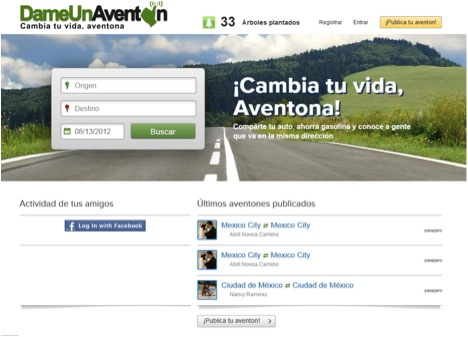

Dame un aventón
Plataforma pública de Internet y móvil en la cual usuarios comparten su auto, dando “aventones”.
Dame un Aventón (www.dameunaventon.com.mx) es la primera plataforma pública de Internet móvil en México de carpooling, es decir, donde los usuarios pueden compartir su auto a amigos o más personas y dar un aventón a cualquier parte de México y desde cualquier lugar. Esta plataforma también sirve para los usuarios que estén buscando un ride o aventón a cierta Ciudad o Estado dentro de México. El objetivo de DameUnAventon es que la gente ahorre gasolina, comparta su auto, ayude al medio ambiente, disminuya el tráfico y también conozca a más personas de una manera divertida. Creemos que si un auto lleva más pasajeros en lugar de ir una sola persona, el daño al medio ambiente será mucho menor, bajará el tráfico sobre todo en Ciudades grandes, y además permitirá que la gente que le interesa ayudar al medio ambiente, podrá encontrar en nuestra página una forma de conocer a gente con sus mismos intereses. Los usuarios solo deben ingresar a la página y crear una cuenta y a través de su cuenta en Facebook. ¿Por qué es indispensable tener una cuenta en Facebook? Porque de esa manera tanto conductores como pasajeros, pueden indagar con quién van a compartir auto o quién se va a subir a su auto, pueden conocer sus intereses, amigos en común, fotografías, etc. y tomar una decisión con esa información. Una vez creada la cuenta, el usuario podrá publicar una ruta o aventón, en donde seleccionará el monto que cobrará por pasajero, el punto de origen, el punto de destino, cuántos lugares está dispuesto a compartir, la fecha, la hora de salida, así como la hora de regreso. Los aventones podrán ser unidireccionales, es decir, desde el punto de origen al punto de destino nada más, o bien redondos, permitiendo que los pasajeros tengan varias opciones. Además, DameUnAventon está conectado a Google para mostrar en mapas las rutas que la gente publica, de tal forma que los pasajeros pueden ver el trayecto que van a hacer, indicando los puntos de origen y puntos de destino.
